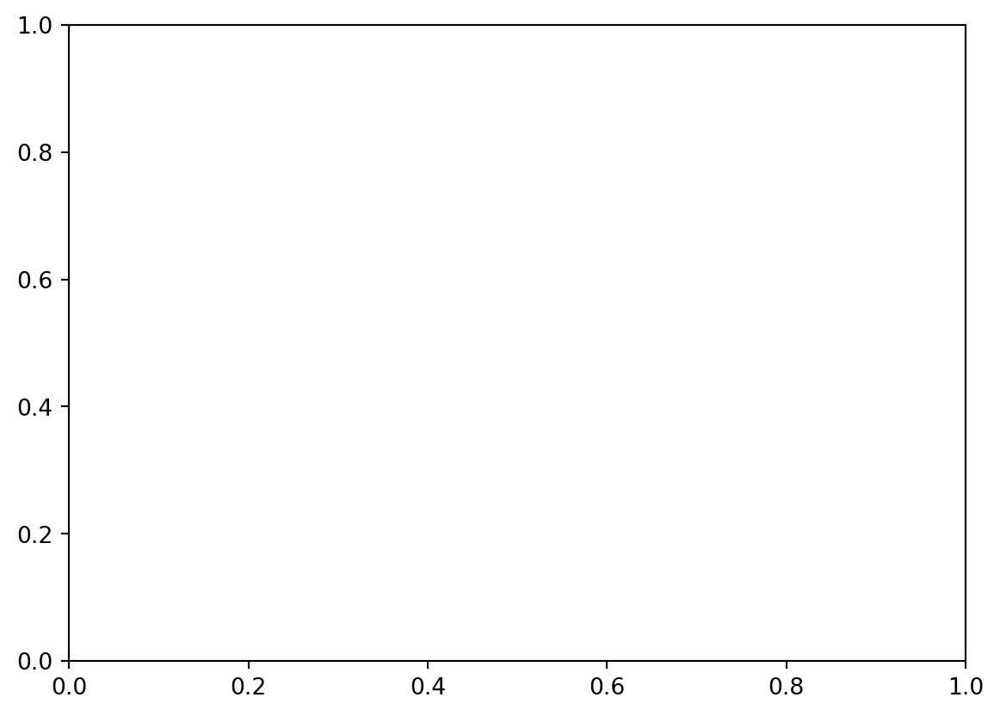
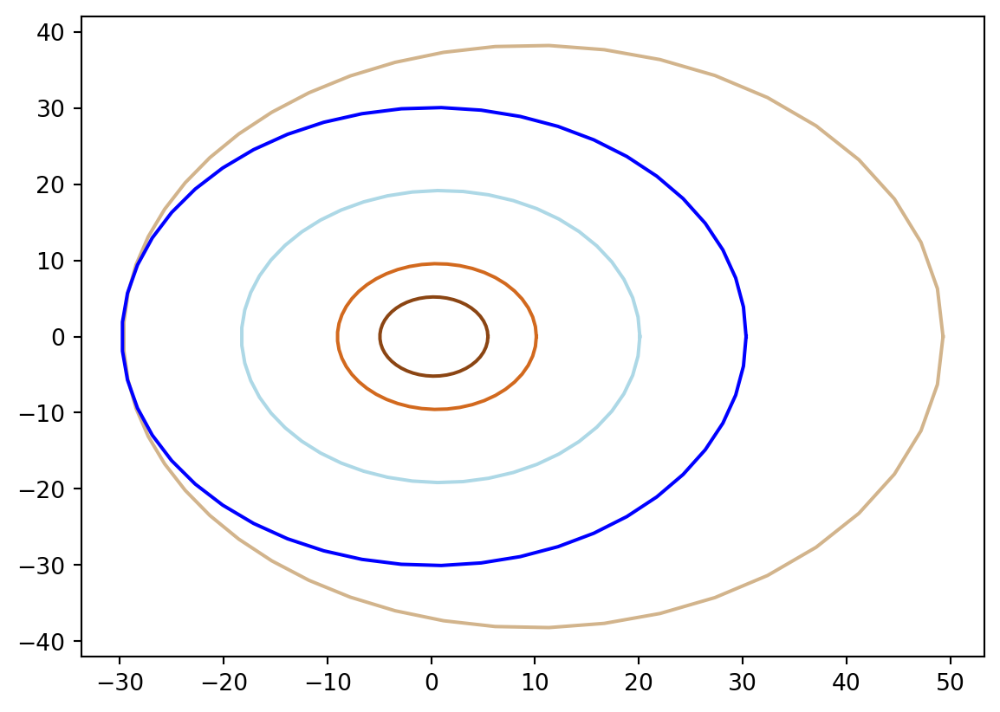
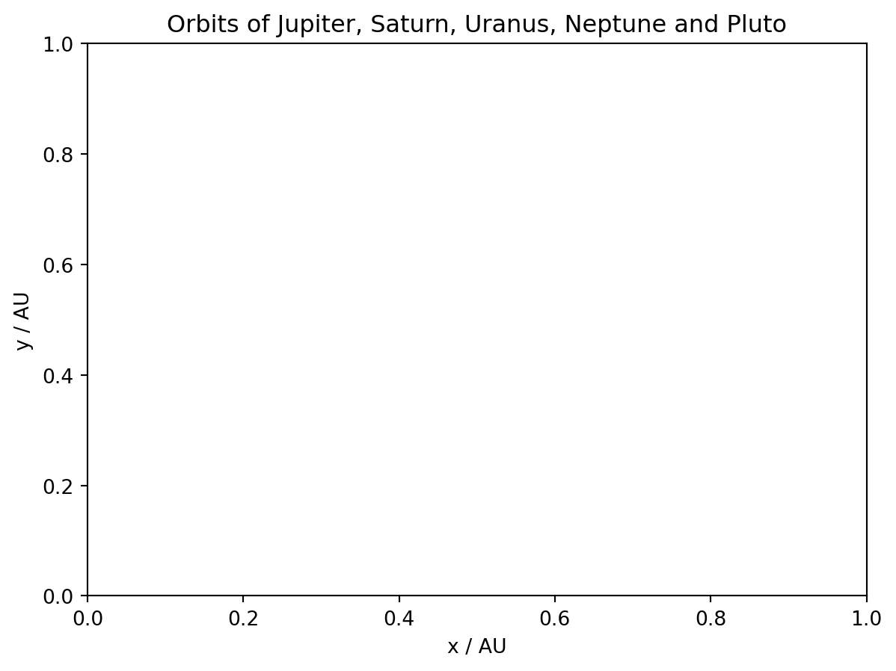
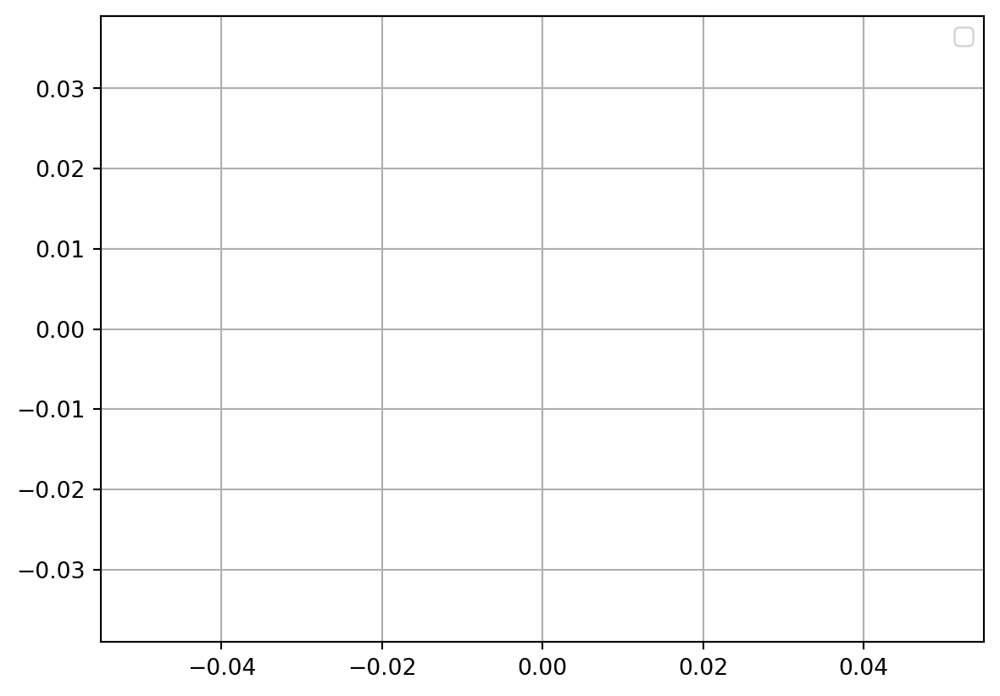

import matplotlib.pyplot as plt
from matplotlib.animation import FuncAnimation
import numpy as npAn Animation of the Gas Giants (and Pluto) Orbiting the Sun
Python
Computational Astrophysics
Animation
Orbits
The matplotlib library and its animation function in Python are used to create a 2D animation of the orbits of the outer planets.
The matplotlib libraries are imported to create plots and animations of the planets. Next, numpy is imported for its mathematical and trigonometric functions.
pi = 3.14159265359
plu_angular_velocity = 0.0467
nep_angular_velocity = 0.0545
ura_angular_velocity = 0.0679
sat_angular_velocity = 0.0967
jup_angular_velocity = 0.1306# Pluto's orbit
t = np.linspace(0, (2*np.pi * 247.94) / 247.94)
R = (39.482 * (1 - (0.2488 * 0.2488))) / (1 - (0.2488 * np.cos(t)))
x = R * np.cos(t)
y = R * np.sin(t)
# Neptune's orbit
nep_t = np.linspace(0, (2*np.pi * 164.8) / 164.8)
nep_R = (30.07 * (1 - (0.008678 * 0.008678))) / (1 - (0.008678 * np.cos(nep_t)))
nep_x = nep_R * np.cos(nep_t)
nep_y = nep_R * np.sin(nep_t)
# Uranus Orbit
ura_t = np.linspace(0, (2*np.pi * 84.0205) / 84.0205)
ura_R = (19.19126 * (1 - (0.04717 * 0.04717))) / (1 - (0.04717 * np.cos(ura_t)))
ura_x = ura_R * np.cos(ura_t)
ura_y = ura_R * np.sin(ura_t)
# Saturn Orbit
sat_t = np.linspace(0, (2*np.pi * 1.03586301) / 1.03586301)
sat_R = (9.5826 * (1 - (0.0565 * 0.0565))) / (1 - (0.0565 * np.cos(sat_t)))
sat_x = sat_R * np.cos(sat_t)
sat_y = sat_R * np.sin(sat_t)
# Jupiter Orbit
jup_t = np.linspace(0, (2*np.pi * 11.862) / 11.862)
jup_R = (5.2038 * (1 - (0.0489 * 0.0489))) / (1 - (0.0489 * np.cos(jup_t)))
jup_x = jup_R * np.cos(jup_t)
jup_y = jup_R * np.sin(jup_t)fig, ax = plt.subplots()
pluto, = ax.plot([], [], 'o', color = "tan")
neptune, = ax.plot([], [], 'o', color = "blue")
uranus, = ax.plot([], [], 'o', color = "lightblue")
saturn, = ax.plot([], [], 'o', color = "chocolate")
jupiter, = ax.plot([], [], 'o', color = "saddlebrown")
sun, = ax.plot([],[],'o',color="yellow")def update(frame):
plu_angle = plu_angular_velocity * frame # Calculate the current angle based on frame number
plu_R = (39.482 * (1 - (0.2488 * 0.2488))) / (1 - (0.2488 * np.cos(plu_angle)))
# Calculates the x and y coordinates of pluto
plu_x = plu_R * np.cos(plu_angle)
plu_y = plu_R * np.sin(plu_angle)
# Updates the position of pluto
pluto.set_data(plu_x, plu_y)
nep_angle = nep_angular_velocity * frame # Calculate the current angle based on frame number
nep_R = (30.07 * (1 - (0.008678 * 0.008678))) / (1 - (0.008678 * np.cos(nep_angle)))
nep_x = nep_R * np.cos(nep_angle) # Calculate x-coordinate of planet's position
nep_y = nep_R * np.sin(nep_angle) # Calculate y-coordinate of planet's position
# Update the position of the planet
neptune.set_data(nep_x, nep_y)
ura_angle = ura_angular_velocity * frame # Calculate the current angle based on frame number
ura_t = np.linspace(0, (2*np.pi) / 247.98)
ura_R = (19.19126 * (1 - (0.04717 * 0.04717))) / (1 - (0.04717 * np.cos(ura_angle)))
ura_x = ura_R * np.cos(ura_angle) # Calculate x-coordinate of planet's position
ura_y = ura_R * np.sin(ura_angle) # Calculate y-coordinate of planet's position
# Update the position of the planet
uranus.set_data(ura_x, ura_y)
sat_angle = sat_angular_velocity * frame # Calculate the current angle based on frame number
sat_R = (9.5826 * (1 - (0.0565 * 0.0565))) / (1 - (0.0565 * np.cos(sat_angle)))
sat_x = sat_R * np.cos(sat_angle) # Calculate x-coordinate of planet's position
sat_y = sat_R * np.sin(sat_angle) # Calculate y-coordinate of planet's position
# Update the position of the planet
saturn.set_data(sat_x, sat_y)
jup_angle = jup_angular_velocity * frame # Calculate the current angle based on frame number
jup_R = (5.2038 * (1 - (0.0489 * 0.0489))) / (1 - (0.0489 * np.cos(jup_angle)))
jup_x = jup_R * np.cos(jup_angle) # Calculate x-coordinate of planet's position
jup_y = jup_R * np.sin(jup_angle) # Calculate y-coordinate of planet's position
# Update the position of the planet
jupiter.set_data(jup_x, jup_y)
# Sun at Cartesian coordinates (0, 0)
sun_x = [0]
sun_y = [0]
plt.scatter(sun_x, sun_y, color = "yellow")
return pluto, neptune, uranus, saturn, jupiter, sun,
# Create an animation with FuncAnimation
animation = FuncAnimation(fig, update, frames = np.arange(0, 150), interval=50)plt.plot(x, y, color = "tan", label = "Pluto")
plt.plot(nep_x, nep_y, color = "blue", label = "Neptune")
plt.plot(ura_x, ura_y, color = "lightblue", label = "Uranus")
plt.plot(sat_x, sat_y, color = "chocolate", label = "Saturn")
plt.plot(jup_x, jup_y, color = "saddlebrown", label = "Jupiter")
# Graph labels and title
plt.xlabel("x / AU")
plt.ylabel("y / AU")
plt.title("Orbits of Jupiter, Saturn, Uranus, Neptune and Pluto")Text(0.5, 1.0, 'Orbits of Jupiter, Saturn, Uranus, Neptune and Pluto')
# Displays graph and grid
plt.axis("equal")
plt.grid()
plt.legend()
plt.show()No artists with labels found to put in legend. Note that artists whose label start with an underscore are ignored when legend() is called with no argument.